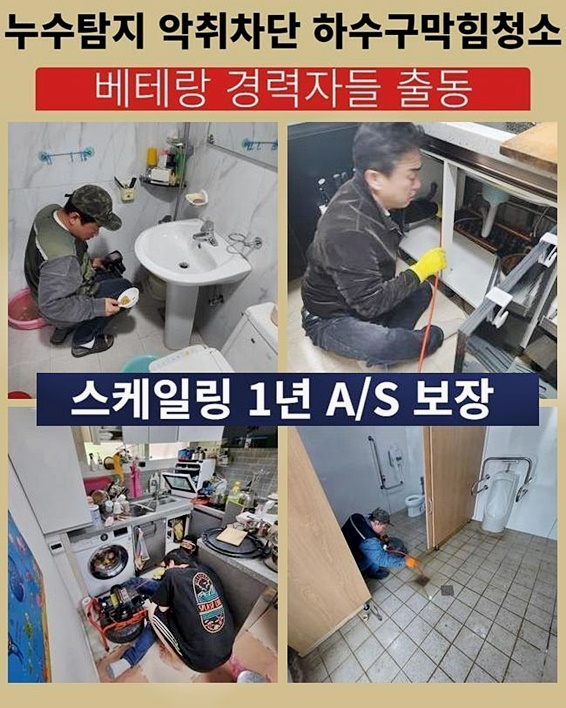
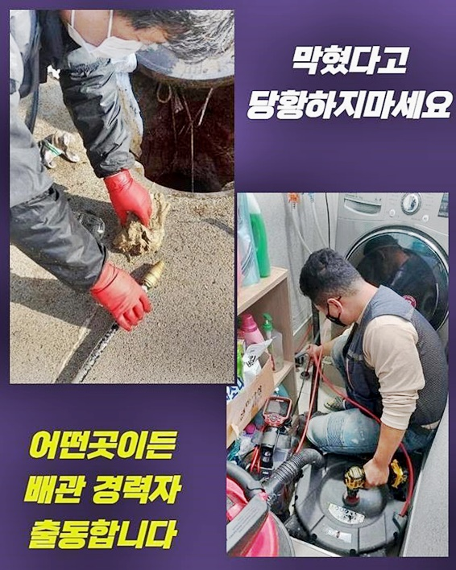
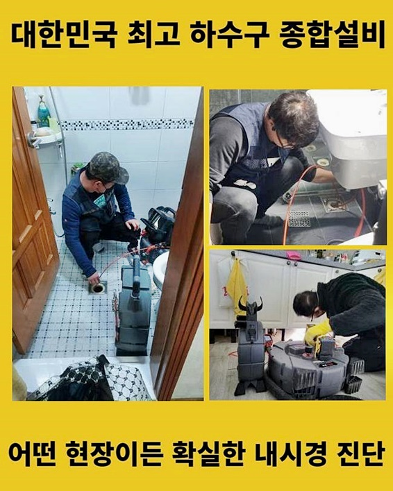
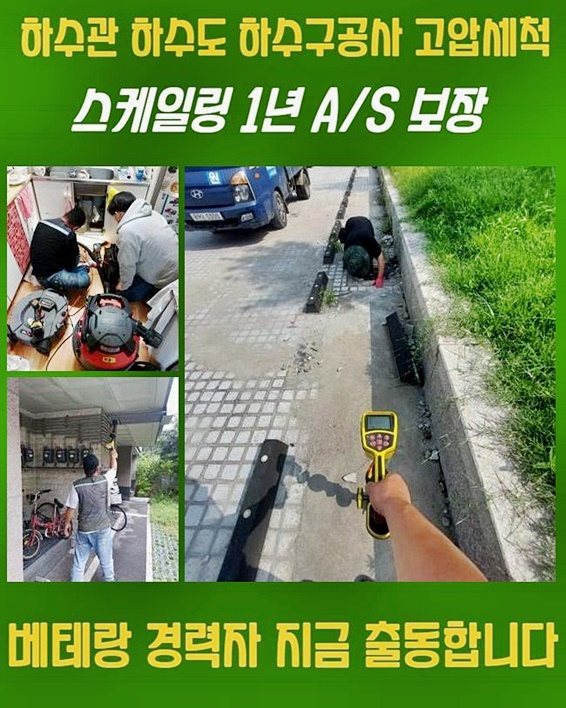
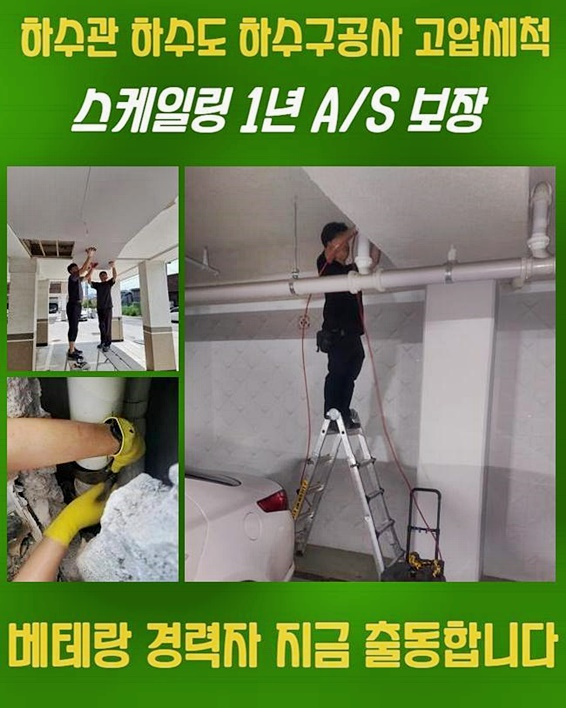
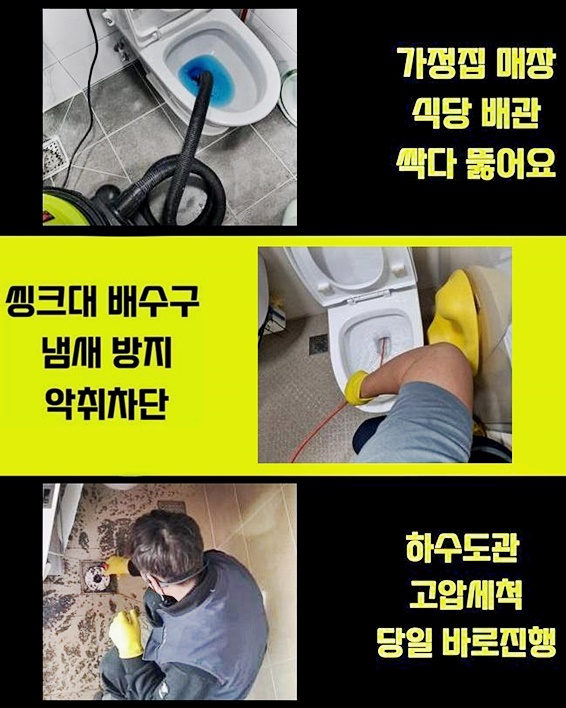

🏠 동두천 걸산동 하수구막힘 하봉암동 배관내시경카메라 누수공사
용인시 처인구 배관막힘 전문 시공 후기

📋 작업 개요
- 위치: 용인시 처인구, 수원시 영통구, 화성시 동탄
- 서비스 유형: 배관막힘, 누수수리, 고압세척, 내시경점검
- 작업 일시:
- 업체명: 하수구수사대 (010-5615-2118)
🔍 문제 상황
동두천 걸산동 하수구막힘 하봉암동 배관내시경카메라 누수공사
배수관에 물막힘 등의 일이 나타났다면 조속하게 대응을 해 나가는 것이 현명한 대처라고 설명드릴 수 있으나 내팽개쳐버리다 막힘이 심화된 후에 조급하게 내방을 요망하시는 의뢰자분들이 십중팔구라고 볼 수 있죠
금일은 우리가 최근에 다녀 온 문제의 현장을 기반으로 배관의 문제들은 무슨 접근법이 불가결하며 그것들을 해소하려면 어떤 계획을 가지고 있어야 하는지에 대해서 알려드리는 기회가 될 수 있도록 하겠습니다
금번에 알려드릴 곳은 보통의 건조물로 문의자분은 오래전에 이미 물빠짐 속력이 명확하게 시원스럽게 일어나지 않는단 걸 체감했지만 사용을 하다보면 수월하게 정리될 것이라고 간주하여 별다른 조치없이 내버려두셨다고 해요
그러나 어느날 갑자기 역류증세마저 나타났으며 점차적으로 피해상황이 커져나가는 것을 목격하고 신속하게 우리에게 문의하신 거였죠
물을 사용해서 무언가를 닦을 시 나오는 각가지 찌꺼기들이 배수관으로 침투하는데요
배수관은 수돗물을 통하게 만드는 시설로서 한 곳으로 이루어진 때가 대다수인데 한 곳의 집에서 배출되는 이물들이 그곳으로 집약되는 경우 결과적으로 배관막힘으로 연계되는 것이예요
이 때문에 아파트의 경우엔 나에게 발생한 사건이 다른 곳으로도 미칠 수 있단 걸 망실하면 안된답니다

🔎 원인 분석
💡 전문가 진단: 정밀 진단 장비를 사용하여 슬러지의 고착 여부를 판명하고 타격/세척 작업을 실시했습니다.
관 속으로 진입한 찌꺼기들은 수돗물에 잘 풀리지 않는 성격을 가져서 한 개의 덩어리로 변모하며 처리가 어려워지는 것이 현실이죠
해당 사태가 지속한다면 관의 길목을 작게 하여 물막힘의 이유가 됩니다
더군다나 외부오물 취급지까지 진행하지 못한 잔재가 수분에 의해 물성이 변하면 주위로 구린내가 진동하며 생활에 트러블을 발생시키죠
수돗물을 사용할 때 배관트랩으로 물 성분이 사라지는 빠르기가 느리다고 판단되거나 이유없는 구린내가 인식되는 때엔 배관찌꺼기가 쌓였을 여지를 이해하고 배관기술자들을 찾아서 막힘이 일어난 동기를 조속히 밝혀 주어야 하죠
우리들은 우선 배관카메라를 통한 파이프를 파악하는 업무를 진행하죠
관 안은 협착하고 기다란 모습으로 가공되었기 때문에 겉으로만 관측하는 것은 불가능에 가까워서 내시경cctv를 활용하여 장애가 생긴 곳을 확실하게 읽어내야 하죠
배관cctv에 관계된 모니터 화면을 통해서 여러 각도에서 알아 보았더니 배관 최하단 부위와 으슥한 곳을 위시하여 기름때와 결합한 슬러지들이 큰 돌덩이처럼 고착화되었다는 것을 목도하게 되었어요
긴 작업 범위를 대상으로 시공을 속행하게 될 때엔 분쇄전문 공구를 투입하여 특정 부위에 쌓인 이물 소쇄 공정을 선결한 뒤 고압물청소 기기를 활용해서 전면적인 세정을 하는 게 제일 옳은 길이라고 말씀드릴 수 있겠네요

🔧 작업 과정
일상중에 예사롭게 접할 수 있는 배관막힘과 관련한 내용을 방예하기 위해서는 적합한 시간에 안을 청소해주는 게 올바르다고 말할 수 있겠지만 때마다 전문업체를 찾아 나서야 하는 데에 부정적일 수 있습니다
그렇지만 물막힘이나 역류가 일어났을 때에 고가의 장비를 사용하여 해결하는 것보단 주기적인 세척관리를 통하여 배수관을 정결하게 유지하는 방법이 비용이나 시간 등을 검약하는 차원으로 돌아온다는 사실을 인지하고 있으시는 것이 좋다고 생각돼요
어설픈 조치는 외려 사태를 안좋은 쪽으로 변하게 할 수 있다는 것을 고려하실 것을 요청드립니다
이곳 저곳에 분포한 막힘을 해결해 보기 위하여 샤프트기기를 삽입하여 바위와 같이 뭉친 슬러지를 차근차근 갈아내 주었고 벽면에 스크래치가 일어나지 않게 조심스레 공사를 속행하였더니 고였던 수돗물이 내려가는 장면을 직관할 수 있었네요
다음에는 호스를 파이프에 삽입해 대략적인 물세척을 단행했어요
빌라나 아파트와 같은 건조물은 하수관을 공유화하여 쓰고 있으므로 많은 부피의 슬러지들이 일거에 토출되기 쉬우므로 적합한 보존용품을 통해 둘레를 빈틈없이 감싼 다음에 소제를 속행하는 것이 좋죠
그리고 배수 시스템이나 개별 성향을 인지하지 못한채 무리하게 압력을 가하게 된다면 부속의 파괴가 일어날 여지도 무시 못합니다
수선중에 나타날 수 있는 여러가지 변수와 관계된 내용을 막아내려면 주거지의 설계면 등의 사항을 알아보고 전반적인 구조와 개별 성향을 이해하는 것이 매우 핵심적인 요인이라고 알려드립니다
저희들은 오래된 업력을 통해서 해당하는 사항을 온전히 이행해낼 수 있기 때문에 여러 변수를 살피고 조심스레 시공을 실행해 드리니 우려하실 필요는 없습니다
오래도록 청소가 실행되지 못한 처소였기에 세척 공정이 이루어지는 시기마다 막대한 찌꺼기들이 배출되는 모양을 목도하게 되었어요
유출된 이물들을 자세하게 들여다보니 일부에선 부패가 시작되는 등의 비경한 모습이라는 사실을 깨달을 수 있었지요
혹여나 이 상황에서 몇 주간의 시간이라도 흘려보냈다면 부적합한 모습으로 변모하였을 게 분명하였죠
훌륭한 능력을 가지고 있는 우리팀 기술진이 빈틈없이 세척 업무를 실행하니 배수문제와 오취를 발생시킨 이물들을 깨끗이 없애드릴 수 있었어요


✅ 작업 완료
처음 막힘이 발발하면 단조롭게 물이 천천히 내려간다 정도로만 인식되겠지만 시간의 흐름에 따라서 역한 냄새가 나오는 등의 복잡한 트러블을 대할 여지가 있습니다
그렇기에 조금이라도 장애의 기운이 느껴진 상황이라고 하면 웬만하면 즉각적으로 처리하는 게 핵심이라고 말씀드립니다
갑자기 발발한 고장을 적절하게 고쳐낼 수 있는 곳을 알아보고 있으시다면 신뢰감 넘치는 저희팀과 함께하시는 것을 부탁드립니다
능숙한 실력을 기초로 하여 배관의 모습을 세밀하게 관찰하여 경제적인 부분에도 신경을 써서 감당할 수 있는 길을 내놓을 것을 확답해 드릴 수 있으니 작업이 요망되신다면 늦은 시간이라도 문의 부탁드립니다



⚠️ 하수구 배관 막힘 예방 및 관리 가이드
- ✅ 머리카락, 비닐, 물티슈 등 물에 분해되지 않는 이물질은 절대 흘려보내지 마세요.
- ✅ 기름기 많은 식기는 설거지 전 키친타올로 먼저 기름때를 닦아내세요.
- ✅ 주기적으로 배수구에 뜨거운 물을 가득 부어주어 유지방 고착을 방지하세요.
- ✅ 작업 후 1년 이내 재발 시 무상 A/S 보증 서비스를 제공합니다.
💡 핵심 정리
- 확실한 장비 작업(내시경 점검 및 샤프트 스케일링)으로 원인을 뿌리 뽑습니다.
- 작업 후 1년 이내에 동일한 부위 재발 시 100% 무상 A/S 서비스를 보장합니다.
- 서울 · 경기 · 인천 전 지역에 24시간 언제든 긴급 출동할 수 있도록 항시 대기 중입니다.
❓ 자주 묻는 질문 (FAQ)
🚨 용인시 처인구 배관막힘 문제로 고민이신가요?
정확한 원인 진단과 확실한 시공으로 재발 없는 해결을 약속드립니다.
24시간 긴급 출동 | 서울 · 경기 · 인천 전지역 | 1년 내 재발 시 무상 A/S